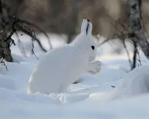
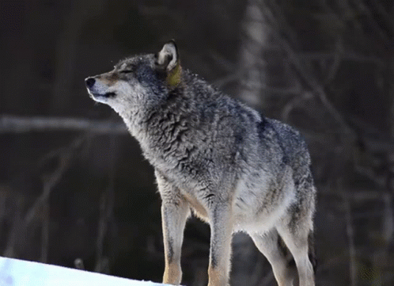

Ze względu na sposób odżywiania organizmy żywe dzielą się na dwie główne grupy: samożywne i cudzożywne. Samożywne to rośliny oraz fotosyntetyzujące protisty i bakterie. Organizmy samożywne nazywamy też producentami. Cała reszta to gatunki cudzożywne. Dzielą się na konsumentów i reducentów, zwanych też destruentami. Reducenci odżywiają się martwą materią organiczną, taką jak obumarłe drzewa, opadłe liście czy szczątki zwierząt niejadalne dla konsumentów. Należą do nich grzyby, niektóre bakterie, dżdżownice i niektóre chrząszcze. Konsumenci zjadają inne organizmy - to przede wszystkim zwierzęta.
| Drapieżnik to organizm który odżywia się pokarmem zwierzęcym. Poluje, zabija i zjada zwierzęta. Nie musi być duży. Drapieżniki można znaleźć wśród wszystkich grup zwierząt ale nie tylko. Istnieją polujące protisty, grzyby i rośliny. Zdjęcie po prawiej to ofiara drapieżnika, należy również zapamiętać, że organizmy polujące na muchy, komary i różne inne stworzenia to też drapieżniki. |
 |
| Drapieżniki stosują różne strategie łowieckie. Szczupaki i modliszki polują z zasadzki, bociany, lisy i borsuki cierpliwie przeszukują teren w poszukiwaniu małych ofiar, a wilki gonią zdobycz, wpędzając ją w pułapkę - bagno, brzeg jeziora - gdzie czeka inny członek watahy. Rośliny mięsożerne przywabiają owady zapachem, pająki budują sieci, a sokoły atakują ptaki z góry, chwytając je ostrymi szponami. Drapieżniki polują na ofiary mniejsze, podobne lub większe od siebie. Bocian zjada kilkanaście płazów i gryzoni dziennie, rodzina wilków - jednego jelenia w kilka dni. Większość drapieżników chętnie żywi się też padliną. Padły jeleń może być źródłem pokarmu dla wielu zwierząt - zimą nawet przez ponad tydzień, latem znacznie krócej. |
 |
Mikołaj Gontarek